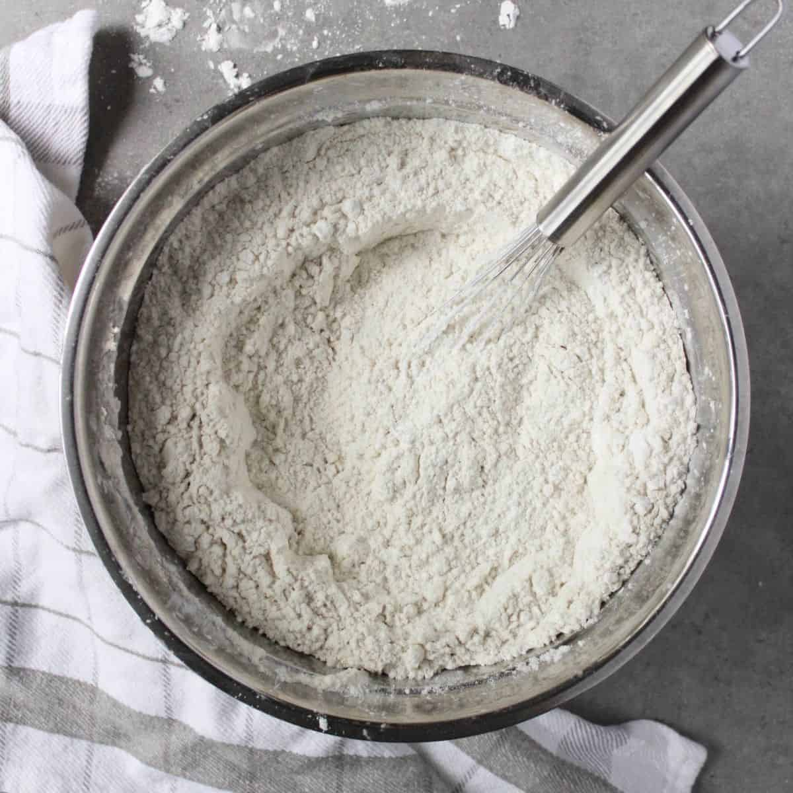

Measure Flour Carefully
One good skill is measuring ingredients correctly. Measuring flour carefully can help your food have the right texture.
A kitchen scale is a helpful way to measure flour. Put your bowl on the scale, reset it to zero, then add the amount listed in the recipe.

Mix Until Combined
When a recipe says to fold dry ingredients into a batter, use a spatula to scoop from the bottom of the bowl and turn the batter over.
Stop when the flour is incorporated. For muffins and some cakes, mixing much longer than needed can make the final texture tougher.